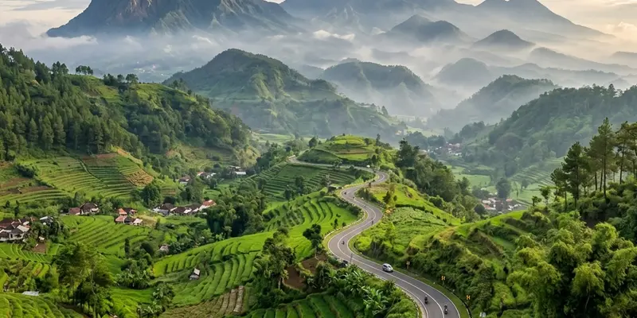

Pantai Tiga Warna adalah kawasan konservasi terumbu karang di Malang yang hanya bisa dikunjungi lewat reservasi resmi ke pengelola Clungup Mangrove Conservation (CMC), dengan kuota harian terbatas dan pendampingan pemandu wajib.
Ringkasan Inti
- Pantai Tiga Warna berada di Desa Tambakrejo, Kecamatan Sumbermanjing Wetan, Kabupaten Malang, di dalam kawasan konservasi Clungup Mangrove Conservation (CMC).
- Kunjungan wajib reservasi terlebih dahulu, tidak ada penjualan tiket langsung di lokasi.
- Kuota pengunjung dibatasi sekitar 100 orang per hari dengan maksimal 10 orang per rombongan.
- Tiket masuk berkisar Rp10.000 per orang, ditambah biaya pemandu wisata per rombongan.
- Kawasan ini tutup setiap hari Kamis untuk kegiatan kerja bakti konservasi.
Apa Itu Pantai Tiga Warna?
Pantai Tiga Warna adalah pantai konservasi di pesisir selatan Malang yang dikenal karena gradasi tiga warna air lautnya, mulai dari biru tua di laut dalam, hijau di laut dangkal, hingga warna pasir kecoklatan di garis pantai. Pantai ini terletak di Desa Tambakrejo, Kecamatan Sumbermanjing Wetan, satu kawasan dengan Pantai Sendang Biru dan Pantai Goa Cina. Pantai ini berada di kawasan rehabilitasi dan konservasi mangrove Clungup atau Clungup Mangrove Conservation (CMC), yang juga merupakan kawasan konservasi terumbu karang dan hutan lindung Desa Sitiarjo, Sumber Manjing Wetan, Kabupaten Malang.
Pantai ini dibuka untuk umum sejak 2014. Menurut informasi yang dikutip dari malangkab.go.id, Pantai Tiga Warna dibuka untuk umum sejak 2014 dan dikelola oleh Bhakti Alam yang beranggotakan masyarakat sekitar. Status kawasan ini termasuk area terlindungi, sehingga pengunjung tidak bisa datang sembarangan tanpa izin dari pengelola setempat.
Mengapa Pantai Tiga Warna Membutuhkan Izin Konservasi?
Izin konservasi diperlukan karena Pantai Tiga Warna berada di dalam kawasan Marine Protected Area yang dijaga ketat demi kelestarian terumbu karang dan hutan mangrove di sekitarnya. Kawasan ini termasuk ke dalam area MPA atau Marine Protect Area.
Sistem izin dan reservasi ini dijalankan bukan sekadar formalitas administratif, melainkan bagian dari strategi pembatasan dampak wisata massal terhadap ekosistem pesisir. Pengelola menetapkan kuota kunjungan agar jumlah orang yang berinteraksi dengan terumbu karang dan area mangrove setiap harinya tidak melampaui daya dukung lingkungan.
Selain menjaga lingkungan, aturan ini juga berdampak pada pengalaman wisatawan. Karena kunjungan dibatasi, suasana pantai relatif lebih tenang, bersih dari sampah, dan tidak dipadati pengunjung dibanding pantai wisata umum lainnya.
Bagaimana Cara Reservasi Resmi ke Pantai Tiga Warna?
Reservasi dilakukan lewat kontak resmi pengelola CMC melalui telepon, SMS, atau WhatsApp, dengan menyampaikan nama, tanggal kunjungan, jam kedatangan, dan jumlah rombongan sebelum mendapat kode reservasi.
Secara umum, prosedur reservasi mengikuti alur berikut:
- Menghubungi kontak resmi pengelola CMC pada jam layanan yang ditentukan.
- Menyampaikan data kunjungan: nama pemesan, tanggal dan jam kedatangan, nomor telepon aktif, serta jumlah anggota rombongan.
- Admin akan menginformasikan biaya yang harus dibayarkan beserta nomor rekening untuk uang muka atau pembayaran penuh.
- Bukti pembayaran dikirimkan kembali melalui WhatsApp untuk diverifikasi.
- Setelah terverifikasi, pengunjung menerima kode reservasi unik.
- Kode reservasi ini wajib ditunjukkan saat rombongan tiba di Pos 2 kawasan CMC Tiga Warna.
Reservasi wajib dilakukan minimal dua minggu sebelum kunjungan. Namun, kebijakan lead time ini dapat bervariasi tergantung musim dan hari kunjungan, sehingga sebaiknya dikonfirmasi ulang langsung ke pengelola sebelum menentukan jadwal, terutama untuk kunjungan pada akhir pekan atau musim liburan yang biasanya lebih padat pemesanan.
Berapa Kuota dan Biaya Kunjungan ke Pantai Tiga Warna?
Kuota kunjungan Pantai Tiga Warna dibatasi sekitar seratus orang per hari dengan maksimal sepuluh orang per rombongan, sementara tiket masuk berkisar Rp10.000 per orang di luar biaya pemandu.
Kunjungan dibatasi hanya untuk 100 orang per hari dan maksimal 10 orang dalam satu rombongan atau grup. Selain tiket masuk, pengunjung wajib menyewa pemandu wisata karena tidak diperbolehkan menjelajah kawasan konservasi secara mandiri. Harga tiket masuk Pantai Tiga Warna di Malang adalah Rp10.000 per orang, dan pengunjung harus didampingi oleh seorang pemandu dengan biaya sewa tertentu per rombongan.
Biaya sewa pemandu dan tenda camping dapat berbeda-beda antar periode, sehingga angka pastinya sebaiknya dikonfirmasi langsung saat proses reservasi berlangsung.

Pelestarian terumbu karang dan hutan mangrove di kawasan konservasi pesisir pantai selatan.
Apa Saja Aturan yang Wajib Dipatuhi Pengunjung?
Pengunjung wajib mengikuti pemandu resmi, membawa kembali seluruh sampah pribadi, serta mematuhi jadwal operasional termasuk hari tutup kawasan untuk kegiatan konservasi rutin.
Beberapa aturan konservasi yang umum berlaku di kawasan ini:
- Setiap rombongan wajib didampingi pemandu dari pengelola CMC selama berada di kawasan pantai dan mangrove.
- Kendaraan roda empat harus diparkir di titik yang ditentukan, dilanjutkan dengan berjalan kaki atau naik ojek menuju pos konservasi.
- Kawasan tutup setiap hari Kamis karena digunakan untuk kerja bakti konservasi oleh pengelola dan warga sekitar.
- Pengunjung diimbau membawa kembali sampah masing-masing agar kawasan tetap bersih.
- Aktivitas seperti snorkeling dan penyewaan perahu keliling mangrove hanya dilakukan sesuai arahan pemandu.
Jam buka kawasan berlaku Jumat hingga Rabu pukul 06.00 sampai 18.00 WIB.
Bagaimana Rute dan Akses Menuju Pantai Tiga Warna?
Akses menuju Pantai Tiga Warna melewati kawasan Sendang Biru dan Pos Clungup Mangrove Conservation, dilanjutkan dengan trekking singkat menuju garis pantai.
Dari Bandara Abdulrachman Saleh Malang, perjalanan berkendara memakan waktu sekitar 2,5 jam dengan jarak tempuh kurang lebih 80 kilometer. Setibanya di area parkir, pengunjung biasanya melanjutkan perjalanan dengan berjalan kaki atau naik ojek menuju pos pendaftaran CMC, sebelum trekking bersama pemandu menuju bibir pantai.
Karena akses menuju pantai melibatkan jalan setapak dan medan alam, kondisi fisik yang cukup serta alas kaki yang nyaman sangat disarankan.
Kesalahan Umum yang Sering Dilakukan Pengunjung
Kesalahan paling umum adalah datang tanpa reservasi, mengabaikan batas waktu pemesanan, atau tidak mengonfirmasi ulang jadwal sebelum keberangkatan.
Beberapa kesalahan yang sebaiknya dihindari:
- Datang langsung ke lokasi tanpa reservasi, padahal kawasan ini tidak melayani tiket on-the-spot.
- Melakukan reservasi terlalu mendekati tanggal kunjungan, terutama pada musim liburan atau akhir pekan.
- Tidak menyiapkan uang tunai secukupnya, karena fasilitas ATM tidak tersedia di kawasan pantai.
- Membawa terlalu banyak barang sekali pakai yang berpotensi menjadi sampah plastik di kawasan konservasi.
- Mengabaikan arahan pemandu terkait area yang boleh dan tidak boleh diakses pengunjung.
FAQ
Tidak. Pantai Tiga Warna tidak melayani penjualan tiket on-the-spot; seluruh pengunjung wajib melakukan reservasi lebih dahulu ke pengelola CMC.
Kuota harian umumnya dibatasi sekitar seratus orang, dengan maksimal sepuluh orang per rombongan reservasi.
Ya. Pengunjung wajib didampingi pemandu resmi dari pengelola CMC selama berada di kawasan konservasi.
Kawasan ini tutup setiap hari Kamis karena digunakan untuk kegiatan kerja bakti konservasi.
Reservasi umumnya disarankan dilakukan minimal beberapa minggu sebelum kunjungan, dan sebaiknya lebih awal untuk akhir pekan atau musim liburan.
Pantai Tiga Warna bukan destinasi yang bisa dikunjungi secara spontan karena statusnya sebagai kawasan konservasi dengan sistem reservasi ketat. Wisatawan yang ingin berkunjung sebaiknya menghubungi pengelola CMC jauh-jauh hari, menyiapkan dokumen dan biaya yang diperlukan, serta mematuhi seluruh aturan konservasi selama berada di lokasi. Dengan persiapan yang tepat, pengunjung tetap bisa menikmati keindahan gradasi warna laut sekaligus turut menjaga kelestarian ekosistem pesisir Malang selatan.